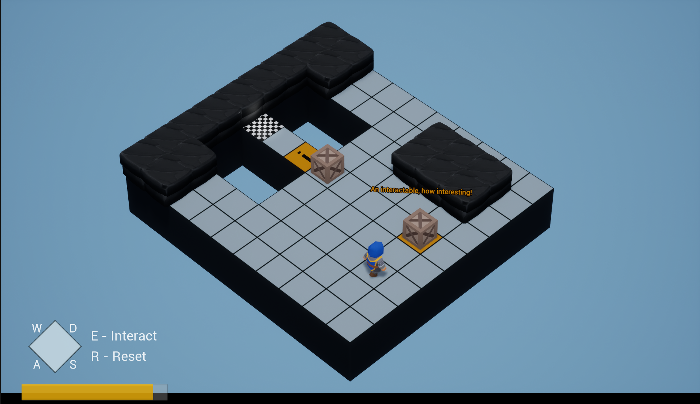
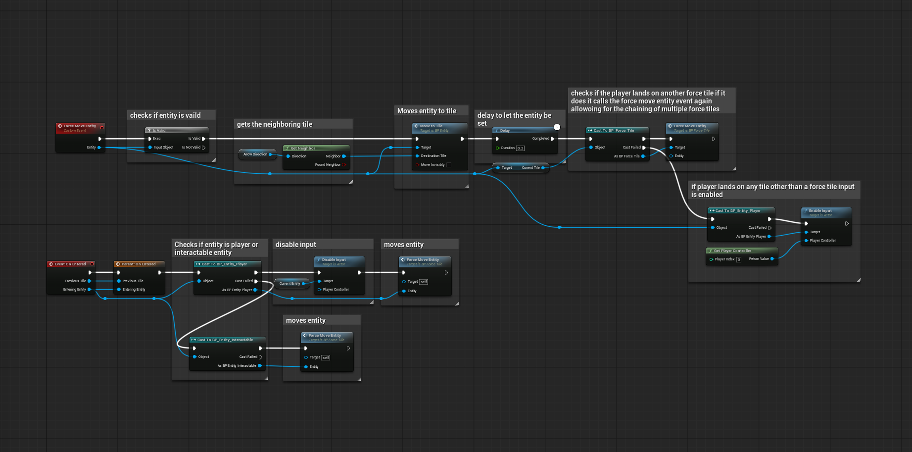
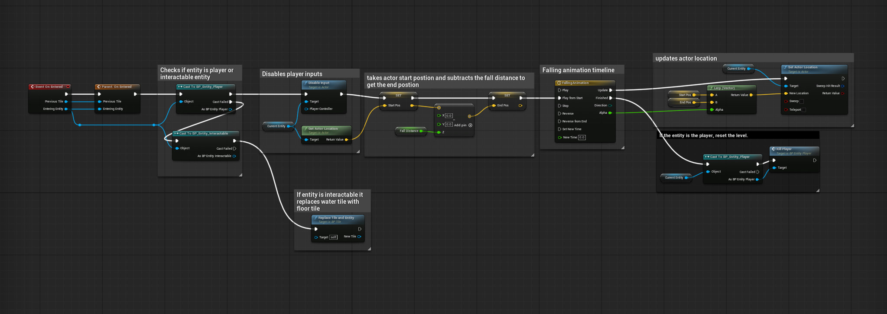
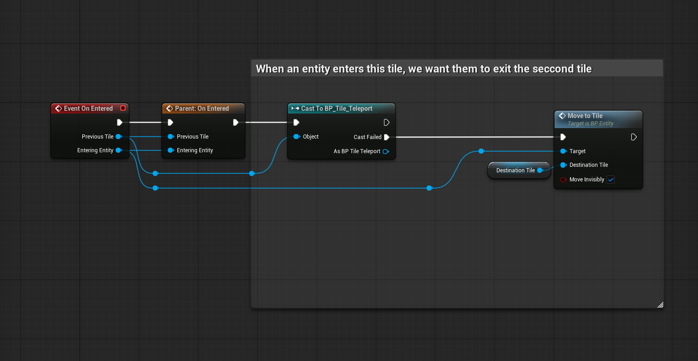
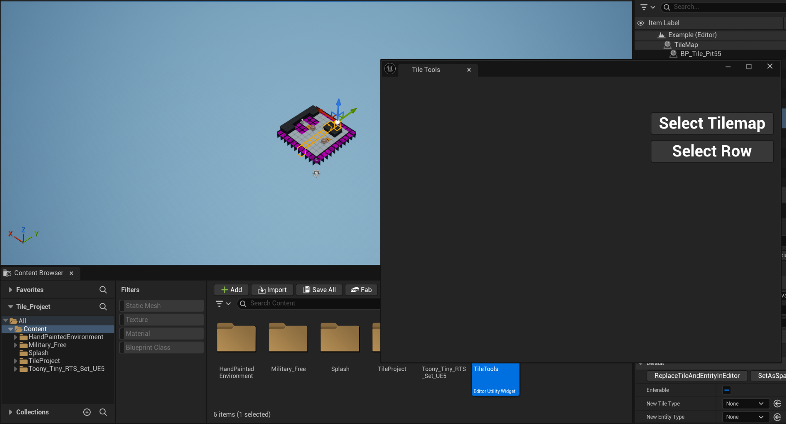
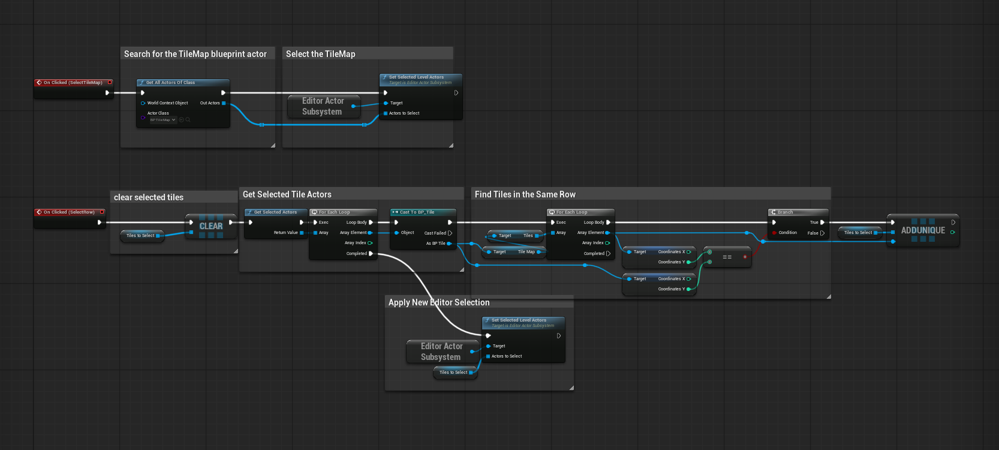

PROJECT OVERVIEW
This project began with a course-provided tile-based framework that included the core TileMap, player and entity systems, interactable objects, and several basic tile types.
Rather than rebuilding the existing framework, I focused on learning how its systems communicated and extending it with additional mechanics. My goal was to create reusable gameplay systems that could interact with both the player and other entities while fitting into the architecture already in place.
Role: Gameplay / Technical Designer • Focus: Gameplay systems, interaction logic, editor tooling, testing, and debugging.

SYSTEM 01
FORCE TILE SYSTEM
The Force Tile automatically moves an entity in a specified direction when it enters the tile. I designed it to work with both the player and interactable entities while supporting chains of consecutive Force Tiles.
Problem
A single forced movement was straightforward, but consecutive Force Tiles needed to continue moving an entity automatically without requiring every sequence to be scripted individually.
Implementation
I created a reusable Force Move Entity event that determines the neighboring tile based on the Force Tile's direction and moves the entity to that tile. After movement completes, the system checks the entity's current tile. If it is another Force Tile, the next tile triggers the same movement logic again. Player input is disabled during forced movement and restored after reaching a normal tile.
Result
Designers can create short pushes or longer automated movement paths simply by arranging Force Tiles in the level.

SYSTEM 02
WATER TILE SYSTEM
The Water Tile reacts differently depending on the type of entity entering it, turning a basic hazard into a puzzle mechanic.
Player Interaction
When the player enters the Water Tile, input is disabled and the Blueprint interpolates the player's position downward to create a falling effect. Once the animation completes, the player is killed and the existing death/reset behavior takes over.
Interactable Interaction
When an interactable object such as a crate enters the Water Tile, the system replaces the Water Tile with a floor tile. This allows movable objects to change the environment and create a traversable path.
Result
The same tile supports multiple outcomes based on the entity interacting with it, making the mechanic part of the puzzle-solving process rather than only a hazard.

SYSTEM 03
TELEPORT TILE SYSTEM
I created a reusable Teleport Tile that allows entities to travel between separated areas of the TileMap without hard-coding world coordinates.
Implementation
Each Teleport Tile contains a configurable Destination Tile reference. When an entity enters the tile, the Blueprint checks the previous tile and uses the existing entity movement system to move the entity invisibly to the assigned destination. The previous-tile check prevents the destination Teleport Tile from immediately sending the entity back.
Result
Teleport destinations can be configured through tile references, allowing the same Blueprint to be reused across different puzzle layouts.

SYSTEM 04
TILE TOOLS EDITOR UTILITY
While constructing levels, selecting large groups of individual tiles became repetitive. I created an editor utility to reduce that manual work.
Select TileMap
The utility can locate the tiles belonging to a TileMap and select them through Unreal's Editor Actor Subsystem.
Select Row
The row-selection tool examines tile coordinates, collects the tiles belonging to the selected row, and selects them together rather than requiring individual manual selection.
Result
The utility reduces repetitive editor interaction and makes larger tile layouts easier to work with during development.


DEVELOPMENT & TESTING
I used dedicated test maps while developing mechanics rather than relying entirely on the finished puzzle level. The Force Tile system was tested across multiple focused maps while I worked through chained movement behavior, and the Teleport Tile had its own test environment before integration.
This let me isolate, test, and debug individual systems before combining them into larger puzzle layouts.
WHAT I LEARNED
One of the biggest lessons from this project was learning how to work within an existing Blueprint architecture instead of building every system from scratch. I had to understand how the provided tiles, entities, TileMap, player, and interactable systems communicated before I could extend them successfully.
Creating the Tile Tools utility also changed how I approached development workflow. Instead of accepting a repetitive editor task, I identified the problem and built a tool to make the process more efficient.
CONTRIBUTION BREAKDOWN
Course-Provided Foundation
Core tile framework, TileMap system, player/entity framework, interactable framework, base UI/art assets, and basic tile types.
My Contributions
Force Tile system and chained movement behavior, Water Tile system and entity-dependent interactions, Teleport Tile system, Tile Tools editor utility, Force Tile visual/material, test maps, puzzle-level implementation, and modifications/extensions to existing tile behaviors.